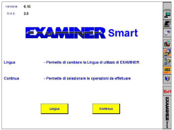
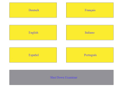
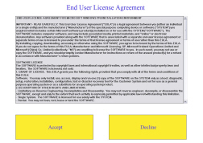
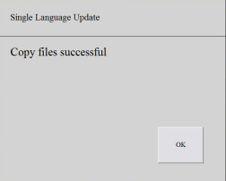
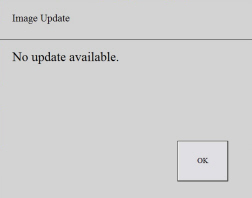
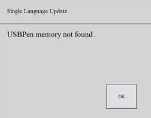
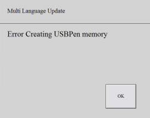
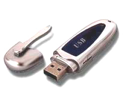

|


|
|
| Service News | ||
|
|
Various models
all versions (159 and Brera) |
|
|||
| 5570 T 000 AA |
HANDS-FREE SYSTEM WITH VOICE RECOGNITION AND Bluetooth® TECHNOLOGY
Software and language update - Network Information and Service Manual Update |
|||
OPERATIONS IN NETWORK
The updates for the hands-free system with voice recognition and Bluetooth® in the Service Network can occur in the following cases.
1. Software update (SW):
-release, by FIAT, of a new SW version to improve the operation of the hands-free system with voice recognition and Bluetooth® or to correct problems reported by Customers;-replacement of the hands-free system with voice recognition and Bluetooth® (to update the component replaced at the last SW version available).2. Update of existing language:
-release, by FIAT, of a new language version used by the hands-free system with voice recognition and Bluetooth®;-replacement of the hands-free system with voice recognition and Bluetooth® (to update the component replaced at the last language version available).3. Loading a different language to the existing one:
-change of ownership of the vehicle to a country with a different language;-delivery of a new vehicle with a different language to the one spoken in the Market;-replacement of the hands-free system with voice recognition and Bluetooth® in a Market other than Italy (the parts arrive with Italian pre-installed). | If the hands-free system with voice recognition and Bluetooth® is being replaced, a different PROXI procedure to the standard one must be carried out. |
Proxi procedure if the hands-free system with voice recognition and bluetooth® is being replaced
-Carry out the PROXI procedure using the Examiner after having entered the Make/Model/Version.-When the procedure is over, select "Control Unit Test" Marelli/Microsoft Convergence".-Select "Configuration" in the Active Diganosis ambient.-Select the command "Restart System Convergence".How to update the device
Requirements
-Personal Computer with CD player and Windows© XP or Windows© 2000 operating system or Examiner Smart.-Latest version of CD for updating the hands-free system with voice recognition and Bluetooth®.-USBPen (minimum size 256 Mb) with manufacturer''s certification of compatibility with Windows© 2000 and Windows© XP Operating Systems. | Fiat periodically releases a CD with the software and language updates for the hands-free system with voice recognition and Bluetooth®. The CD includes a software application that allows the production of a USBPen (not supplied) with one of the following options: |
Every CD cancels and replaces the previous one and contains all the updates for the operating system and the languages until that time.
The CD can be used on a normal PC (as long as it is equipped with a Windows© XP operating system) or on an Examiner Smart.
General procedure to be followed for the prepration of usbpens using a pc
| In the case of use on a normal PC the PC rebooting procedures described in the paragraph relating to the use of the Examiner are not required. In addition the USBPen will always be recognized as soon as it is inserted in the USB slot. |
Fig.1

Fig.2

1. Prepare Software Update
Use this function to update the operating system for the hands-free system with voice recognition and Bluetooth®
2. Prepare Multilingual Update
Use this function to create a USBPen containing all the languages available for the hands-free system with voice recognition and Bluetooth®.
| The selection of the language in the hands-free system with voice recognition and Bluetooth® will take place through the controls menu in the control panel following the procedure described in the Operations on the vehicle chapter |
3. Prepare language update
Use this function to create a USBPen containing only one of the languages available for the hands-free system with voice recognition and Bluetooth®.
-The selection of the single language to be loaded onto the USBPen and consequently into the hands-free system with voice recognition and Bluetooth® will be requested (Fig. 3).-The language preselected will be loaded onto the hands-free system with voice recognition and Bluetooth® irrespective of the language selected in the instrument panel, following the procedure described in the Operations on the vehicle chapter.Fig. 3

Conclusion of the procedure on the PC
If the operations requested previously have been carried out correctly, the screen illustrated in Fig. 4 will appear.
Fig. 4

If the screen in Fig. 4 appears, continue with the procedure described in the Operations on the vehicle chapter, otherwise consult the Solving problems chapter.
General procedure to be followed for the prepration of usbpens using the examiner
General rules
-The procedures described below refer to the use of a CD in the Examiner, if it is used on a PC, translate the procedures of switching off and rebotting the equipment and bear in mind that the USBPen will be correctly recognized as soon as it is inserted in the special USB port in the PC. | Each time the USBPen is used with the CD, all the data stored previously will be completely deleted. |
Preparation of the USBPen
-Switch on the Examiner and wait for the screen shown in Fig. 5 to be displayed.Fig. 5

| The USB Pen will only be recognized if it is inserted with the equipment switched off. |
| Do not touch the screen until the screen shown in Fig. 6 appears |
Fig. 6

| The "Stop the system" (Shut Down Examiner) button behaves differently depending on whether you are using an Examiner or a PC: A. on the Examiner it reboots the equipment. For this reason, at the end of the programming operations for the hands-free system with voice recognition and Bluetooth®, we suggest extracting the CD from the CDROM drive and keeping the Examiner start button pressed until 2 consecutive beeps are heard. The instrument will then reboot in the diagnostic ambient allowing the normal switching off procedure using the EXIT button. B. on a PC it causes the exit from the CD application in progress but does not switch the PC off or reboot it |
Fig. 7

1. Prepare Software Update
Use this function to update the operating system for the hands-free system with voice recognition and Bluetooth®
2. Prepare Multilingual Update
Use this function to create a USBPen containing all the languages available for the hands-free system with voice recognition and Bluetooth®.
| The selection of the language in the hands-free system with voice recognition and Bluetooth® will take place through the controls menu in the control panel following the procedure described in the Operations on the vehicle chapter |
3. Prepare language update
Use this function to create a USBPen containing only one of the languages available for the hands-free system with voice recognition and Bluetooth®.
-The selection of the single language to be loaded onto the USBPen and consequently into the hands-free system with voice recognition and Bluetooth® will be requested (Fig. 8).-The language preselected will be loaded onto the hands-free system with voice recognition and Bluetooth® irrespective of the language selected in the instrument panel, following the procedure described in the Operations on the vehicle chapter.Fig. 8
Conclusion of the procedure on the Examiner
If the operations requested previously have been carried out correctly, the screen illustrated in Fig. 9 will appear.
Fig. 9

If the screen in Fig. 9 appears, continue with the procedure described in the Operations on the vehicle chapter, otherwise consult the Solving problems chapter.
Solving problems on the pc or examiner
Possible errors or problems are described in this section:
This screen (Fig. 10) appears if there are no updates on the CD for the operating system for the hands-free system with voice recognition and Bluetooth®.
Fig. 10

This screen (Fig. 11) appears if the USBPen is not connected to the Examiner or is defective (see Note after Fig. 12).
Fig. 11

This screen (Fig. 12) appears if the USBPen has a capacity of less than 256 MB or is defective
Fig. 12

| Before deeming a USBPen to be defective, always carry out a test on the procedure on another PC, possibly of a different make or model to the one used previously. |
For use on the examiner, always remember that:
-the USBPen should be connected to an Examiner that is switched off or switching off from a previous work session-if the USBPen is removed during the current work session, e.g.: because it is used to transfer a language into the hands-free system with voice recognition and Bluetooth® so that the Examiner can recognize it and reuse it again, it must be reconnected to the equipment and rebooted.Operations on the vehicle
If the updates have been downloaded successfully onto the USBPen, it can be extracted from the Examiner (or from the PC) and:
1. In the case of SW updating:
-insert the USBPen into the USB port for the hands-free system with voice recognition and Bluetooth® and turn the ignition ON-wait for the vehicle instrument display to show that the updating procedure has been launched-wait for the result of the update to appear on the vehicle instrument panel display.If the result is positive:
-extract the USBPen from the hands-free system with voice recognition and Bluetooth®-check, through the Examiner control units Test, that the hands-free system with voice recognition and Bluetooth® has been updated with the SW release for the version required-check that the hands-free system with voice recognition and Bluetooth® does not have the faults indicated by the Customer-proceed with the language update (if present) repeating the procedure from the beginning.If the outcome is negative ("NO language" indication):
-repeat the procedure from the beginning.2. In the case of multilingual updating:
-turn the ignition key ON-insert the USBPen in the USB port for the hands-free system with voice recognition and Bluetooth®-on the instrument panel, select the language you wish to installe on the hands-free system with voice recognition and Bluetooth®-wait for the vehicle instrument display to show that the updating procedure has been launched-wait for the result of the update to appear on the vehicle instrument panel display.If the result is positive:
-extract the USBPen from the hands-free system with voice recognition and Bluetooth®-check that the hands-free system with voice recognition and Bluetooth® has been correctly updatedIf the outcome is negative ("NO language" indication):
-repeat the procedure from the beginning.3. In the case of single language updating:
-insert the USBPen into the USB port for the hands-free system with voice recognition and Bluetooth® and turn the ignition ON-wait for the vehicle instrument display to show that the updating procedure has been launched-wait for the result of the update to appear on the vehicle instrument panel display.If the result is positive:
-extract the USBPen from the hands-free system with voice recognition and Bluetooth®-check that the language for the hands-free system with voice recognition and Bluetooth® has been correctly updated.If the outcome is negative ("NO language" indication):
-repeat the procedure from the beginning.Solving problems on the vehicle
If the language is being update (either single or multilingual) the indication "No language" will appear on the instrument panel at the end of the procedure.
If this situation is repeated after having repeated the procedure from the beginning, this means that the USBPen being used is not compatible with the hands-free system with voice recognition and Bluetooth® and one of the USBPens in the USBPen Description chapter should be used.
Usbpen description
The USBPen (Fig. 13) is a device on which it is possible to load data.
Fig. 13

To update the software and the language, the hands-free system with voice recognition and Bluetooth® requires a USBPen with standard USB version 1.0, 1.1 or 2.0 and a 256MB memory (USBPens with a memory of up to 1 GB are supported).
The following USBPens have been officially tested on the hands-free system with voice recognition and Bluetooth®:
-Memorex® Travel Driver 256 MB USB 2.0-Memorex® Travel Driver 1 GB USB 2.0-SanDisk® Cruzer™ Micro 256 MB USB 2.0-SanDisk® Cruzer™ Micro 256 MB USB 2.0-Lexar™ JumpDrive® 2.0 512 MB-PNY® Attaché 256 MB USB 2.0-Sony® Micro Vault®